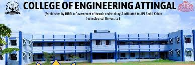

The College of Engineering Attingal (CEAL) was started in 2004 under the Institute of Human Resources Development (IHRD), Government of Kerala. The institution is affiliated with APJ Abdul Kalam Kerala Technological University and approved by AICTE. Located in Attingal, Thiruvananthapuram, the college provides quality technical education in various engineering disciplines. The campus environment supports both academic learning and practical skill development.
CEAL offers several undergraduate engineering programs designed to build strong technical knowledge among students. The B.Tech programs are conducted for four years and include specializations such as Computer Science & Engineering, Electronics & Communication Engineering, Electrical & Electronics Engineering, and Artificial Intelligence & Machine Learning.
| Course | Duration | Eligibility |
|---|---|---|
| Computer Science & Engineering | 4 Years | 12th Pass with Physics and Mathematics |
| Electronics & Communication Engineering | 4 Years | 12th Pass with Physics and Mathematics |
| Electrical & Electronics Engineering | 4 Years | 12th Pass with Physics and Mathematics |
College of Engineering Attingal is situated on the ITI campus near the KSRTC Bus Stand, Attingal, in Thiruvananthapuram district. The campus is easily accessible by road and is located close to important facilities in the town.
Visit the Official Website